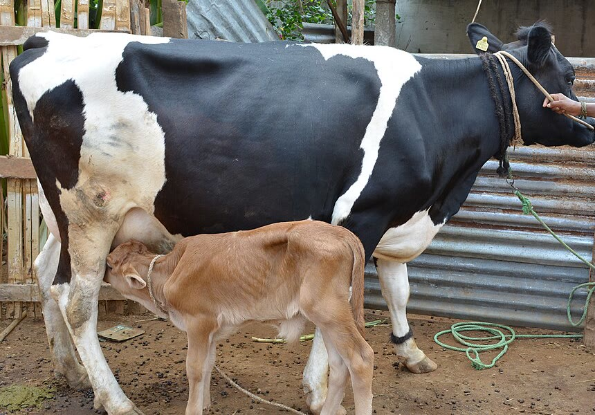

胚胎工程（下）：技术及其应用
本期导读
胚胎工程（下） · 体外受精 · 胚胎移植 · 胚胎分割

视频原话 · 导读3 句
- 同学们好！这节课梳理人教版选择性必修三第二章第三节的下半部分——胚胎工程技术及其应用。9.7s
- 高考常考胚胎移植的基本程序和生理学基础、胚胎分割的要点，以及试管动物和克隆动物的比较。9.2s
- 我们按八个考点梳理，每个考点都讲清楚怎么考、怎么做。5.5s
体外受精01#
采集卵母细胞
体外培养→
培养到 MⅡ 期
采集精子
获能处理→
获能的精子
在适当的培养液中共同培养
受精→
受精卵 → 早期胚胎
解题方法
受精前处理两句话答全：卵母细胞培养到 MⅡ 期；精子获能处理
视频原话5 句
- 考点一，体外受精。主要包括卵母细胞的采集、精子的获取和受精等步骤。7.9s
- 采集到的卵母细胞，要在体外培养到MⅡ期，才能与精子受精。6.1s
- 采集到的精子，要进行获能处理。3.7s
- 然后，在适当的培养液中让获能的精子和培养成熟的卵子共同培养，完成受精。8.1s
- 考法：问受精前的处理。解题方法：两句话答全——卵母细胞培养到MⅡ期，精子获能处理。9.6s
胚胎移植的概念02#
胚胎移植：将胚胎移植到同种的、生理状态相同的雌性动物体内，使之继续发育为新个体
供体
提供胚胎
遗传性状优良
遗传性状优良
受体
接受胚胎、孕育后代
体质健康、繁殖能力正常
体质健康、繁殖能力正常
易错
后代的遗传物质来自供体；受体只提供胚胎发育的场所，不影响后代的遗传特性
视频原话4 句
- 考点二，胚胎移植。它是指把通过体外受精及其他方式得到的胚胎，移植到同种的、生理状态相同的雌性动物体内，使之继续发育为新个体的技术。14.4s
- 提供胚胎的个体，叫作供体；接受胚胎的个体，叫作受体。5.9s
- 供体一般是遗传性状优良的个体；受体只要有健康的体质和正常繁殖能力就行。7.8s
- 易错：胚胎移植中，后代的遗传物质来自供体，受体只提供胚胎发育的场所，不影响后代的遗传特性。10.0s
胚胎移植的程序03#
供体、受体
同期发情处理
→
供体超数排卵
促性腺激素
→
配种或人工授精
→
冲卵
冲出早期胚胎
胚胎质量检查
桑葚胚或囊胚
→
移植给受体
→
妊娠检查
→
产下后代
易错
超数排卵用促性腺激素，不是性激素；“冲卵”冲出的是胚胎，不是卵子
视频原话6 句
- 考点三，胚胎移植的基本程序。第一步，对供体和受体进行同期发情处理。7.9s
- 第二步，用促性腺激素对供体母畜进行超数排卵处理。5.9s
- 第三步，对供体进行配种或人工授精。然后冲卵，也就是把供体子宫内的胚胎冲洗出来。8.9s
- 第四步，对胚胎进行质量检查，此时胚胎应发育到桑葚胚或囊胚阶段。7.4s
- 最后，把胚胎移植给受体，并对受体进行妊娠检查。5.6s
- 易错：超数排卵用的是促性腺激素，不是性激素；“冲卵”冲出的是胚胎，不是卵子。8.3s
胚胎移植的基础04#
| 生理学基础 | 为……提供了可能 |
|---|---|
| 同种动物供、受体生殖器官的生理变化相同 | 胚胎移入（同期发情） |
| 早期胚胎处于游离状态，未与子宫建立组织联系 | 胚胎的收集（冲卵） |
| 受体对外来胚胎基本不发生免疫排斥反应 | 胚胎在受体内存活 |
| 胚胎与子宫建立联系，但遗传特性不受影响 | 保持供体优良性状 |
解题方法
为什么能冲卵？游离状态。为什么能存活？不发生免疫排斥。为什么同期发情？生理环境相同
视频原话5 句
- 考点四，胚胎移植的生理学基础。第一，同种动物的供体和受体，生殖器官的生理变化是相同的，为胚胎移入提供了相同的生理环境。12.8s
- 第二，早期胚胎在一定时间内处于游离状态，没有与母体子宫建立组织上的联系，这为胚胎的收集提供了可能。10.5s
- 第三，受体对移入子宫的外来胚胎基本上不发生免疫排斥反应，为胚胎在受体内的存活提供了可能。9.6s
- 第四，供体胚胎可与受体子宫建立正常的生理和组织联系，但遗传特性在孕育过程中不受影响。9.4s
- 考法：一个现象对应一条基础。解题方法：为什么能冲卵？游离状态。为什么能存活？不发生免疫排斥。为什么要同期发情？生理环境相同。15.6s
胚胎移植的意义05#
充分发挥雌性优良个体的繁殖潜力
供体只产生优良胚胎；妊娠和育仔由受体承担 → 缩短供体的繁殖周期
胚胎移植是胚胎工程的最后一道工序：体外受精、胚胎分割、核移植的胚胎都要经过它
解题方法
问意义，标准表述：充分发挥雌性优良个体的繁殖潜力
视频原话4 句
- 考点五，胚胎移植的意义。最主要的是：可以充分发挥雌性优良个体的繁殖潜力。8.3s
- 供体只负责产生具有优良遗传特性的胚胎，繁重而漫长的妊娠和育仔任务由受体承担，大大缩短了供体本身的繁殖周期。11.4s
- 胚胎移植是胚胎工程的最后一道工序：体外受精、胚胎分割、核移植得到的胚胎，都要经过胚胎移植才能获得后代。11.0s
- 解题方法：问意义，答“充分发挥雌性优良个体的繁殖潜力”这一句，几乎是必考的标准表述。8.8s
胚胎分割06#
机械方法切成 2、4、8 等份，获得同卵双胎或多胎
选发育良好、形态正常的桑葚胚或囊胚
内细胞团均等分割，否则影响恢复和发育
属于无性繁殖；份数越多成功率越低，二分胚胎成功率最高
易错
均等分割的是内细胞团，不是滋养层；取滋养层细胞做 DNA 分析可鉴定性别
视频原话5 句
- 考点六，胚胎分割。它是采用机械方法把早期胚胎切割成2等份、4等份或8等份等，经移植获得同卵双胎或多胎的技术。12.6s
- 应选择发育良好、形态正常的桑葚胚或囊胚进行分割。5.8s
- 分割囊胚时，要将内细胞团均等分割，否则会影响分割后胚胎的恢复和进一步发育。8.1s
- 胚胎分割属于无性繁殖或克隆，后代的遗传物质相同。但分割的份数越多，成功率越低，实践中以二分胚胎的成功率最高。12.1s
- 易错：均等分割的是内细胞团，不是滋养层；还可以取滋养层细胞做DNA分析，进行性别鉴定。9.7s
试管与克隆动物07#
| 比较项目 | 试管动物 | 克隆动物 |
|---|---|---|
| 关键技术 | 体外受精 | 核移植 |
| 生殖方式 | 有性生殖 | 无性生殖 |
| 遗传物质 | 来自双亲 | 核遗传物质来自供核个体 |
| 共同技术 | 早期胚胎培养、胚胎移植 | 早期胚胎培养、胚胎移植 |
解题方法
看有没有精卵结合：有就是有性生殖（试管动物），没有就是无性生殖（克隆动物）
视频原话4 句
- 考点七，试管动物与克隆动物的比较。试管动物：通过体外受精、早期胚胎培养和胚胎移植产生，属于有性生殖。11.4s
- 克隆动物：通过核移植、早期胚胎培养和胚胎移植产生，属于无性生殖。7.4s
- 试管动物的遗传物质来自双亲；克隆动物的核遗传物质只来自供核个体。6.9s
- 解题方法：看有没有精卵结合——有就是有性生殖；两者的共同技术是早期胚胎培养和胚胎移植。9.4s
流程图判读08#
解题方法
先看起点材料判断技术，终点都是胚胎移植；激素处理步骤想到同期发情和超数排卵
视频原话5 句
- 考点八，胚胎工程流程图判读。看到卵母细胞和精子，想到体外受精，试管动物。8.4s
- 看到去核卵母细胞和体细胞，想到核移植，克隆动物。5.2s
- 看到切割胚胎，想到胚胎分割，同卵多胎。4.5s
- 所有路线最后都汇合到胚胎移植，由受体完成孕育。5.2s
- 解题方法：先找起点材料判断技术，再看终点都是胚胎移植；有激素处理的步骤，记住同期发情和超数排卵。11.0s
易错速查✓
先自己判断，再点按钮查看对错与解析。
- 1采集的卵母细胞可直接与获能精子受精说法错误：要先培养到MⅡ期
- 2胚胎移植前要对供体和受体同期发情处理说法正确。
- 3超数排卵用性激素处理供体母畜说法错误：用促性腺激素处理
- 4受体对移入的外来胚胎基本不发生免疫排斥说法正确。
- 5胚胎分割要将滋养层均等分割说法错误：要将内细胞团均等分割
- 6试管动物属于有性生殖说法正确。
供体出胚胎，受体只孕育！
视频原话 · 易错速查5 句
- 最后，用六道判断题检验一下。3.6s
- 判断一：采集的卵母细胞可直接受精？错，要培养到MⅡ期。判断二：移植前对供体和受体同期发情处理？对。12.6s
- 判断三：超数排卵用性激素？错，用促性腺激素。判断四：受体对外来胚胎基本不发生免疫排斥？对。11.9s
- 判断五：胚胎分割要均等分割滋养层？错，是内细胞团。判断六：试管动物属于有性生殖？对。11.3s
- 八个考点串成一条线：供体出胚胎，受体只孕育。我们下期再见！6.9s
图片来源
图片来源：Wikimedia Commons —— Saravanan Durairaj《ET calf》CC BY-SA 4.0（裁切）
Photo: Saravanan Durairaj, CC BY-SA 4.0